开心果 Need Car · 2022-03-23T08:16:00+08:00 · 微信原文
“人生就是一列开往坟墓的列车，路途上会有很多站，很难有人可以自始至终陪着走完。当陪你的人要下车时，即使不舍也该心存感激，然后挥手道别。”-宫崎骏-《千与千寻》
QA1：第一次响应NRC0x78 Pending报文时间要多久？
答：前文Uds诊断：P2server与P4server时间，说点你不知道的细说了P2*Server时间，里面有描述NRC0x78的问题。我们清楚，ECU先回复NRC0x78 Pending报文是为了争取额外的P2*Server时间，以便有足够的时间处理接收到的诊断指令，但是也不能忽视了第一次响应NRC0x78 Pending报文的时间，即第一次响应NRC0x78 Pending报文的时间要＜P2Server_max。如果P2Server_max = 50ms，则ECU第一次响应NRC0x78 Pending报文的时间必须在50ms内；如果P2Server_max = 25ms，则ECU第一次响应NRC0x78 Pending报文的时间必须在25ms内。
QA2：App下请求$11 01诊断服务，程序复位到Boot入口位置还是App入口位置？
答：参考14229 - 1，不管是在App还是在Boot中，请求$11 01服务时，程序均复位到Boot入口位置。扩展：不管是在App还是在Boot中，请求$10 02服务时，程序也均复位到Boot入口位置，如下所示：
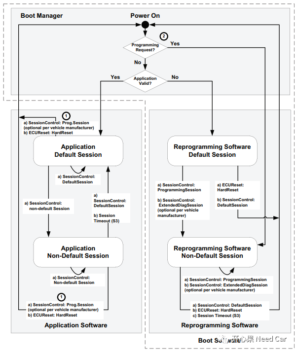
QA3:程序冷启动时，先判断编程请求标志位(Programming Request)还是先判断App有效标志位(Application Valid)？
答：参考上图，先判断Programming Request。开发Boot的工程师可能比较清楚这个逻辑，开发时需要留意。
QA4：App程序升级以后，为什么要执行$11 01诊断服务，直接运行更新的App程序不行吗？
答：App程序升级以后，会对更新的App程序校验，校验通过直接跳转到App程序入口处不就好了，为啥还需要执行$11 01服务。第一:升级App时，执行的是Boot软件，Boot会占用外设资源，如果Boot没有去初始化动作，或者去初始化动作不彻底，运行新的App程序时，会因资源无法使用而导致异常；第二：ROM区数据更新后，需要复位后生效。执行$11 01服务，可以满足上述两点，且资源释放更彻底。
QA5：诊断报文可以像网络管理报文那样保持网络唤醒吗？
答：可以。但是这里有几个细节需要注意，第一次网络唤醒必须是有效的唤醒事件唤醒网络，如：网络管理报文或者KL15。也就是说诊断报文是无法唤醒网络的。当网络唤醒以后，即使该节点接收不到网络管理报文，只接收到诊断报文，节点网络依然激活，即节点网络处于Network Mode模式。
依据是什么呢？Autosar里给的解释：诊断报文相当于对ComM的channel请求FULL_COMMUNICATION。
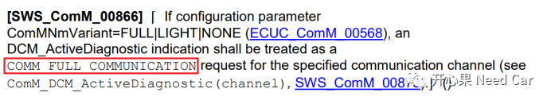
如果ComM进入了COMM_FULL_COMMUNICATION状态，诊断报文就相当于不断的请求FULL_COMMUNICATION通信（功能类似网络管理报文），所以诊断报文可以保持网络唤醒。
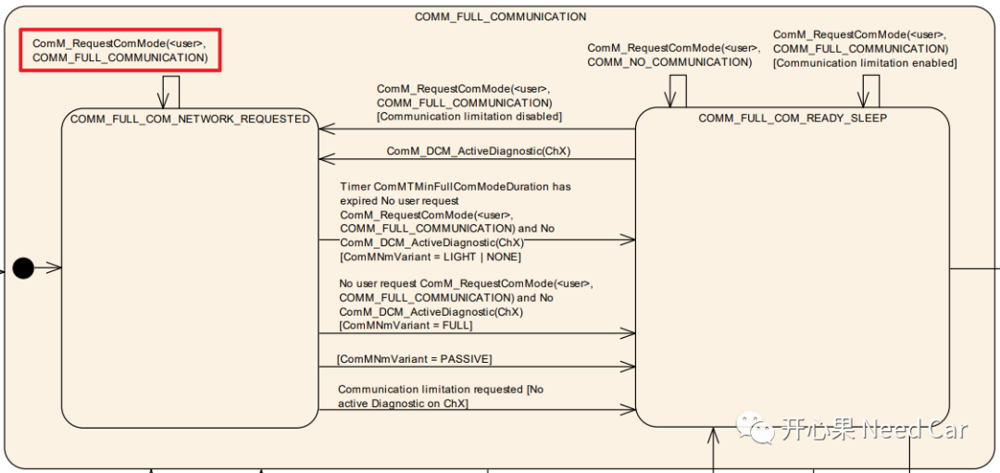
注意：
这里说的诊断报文命令，不包括$10 xx（比如：xx = 0x02）和$11 xx(比如：xx = 0x01/0x03)服务，这两个诊断请求直接请求复位动作，保持不了网络状态。
QA6:NRC0x11和NRC0x13，哪个优先级更高？
答：NRC0x11的优先级要高于NRC0x13。参考14229-1，NRC可以分为:Mandatory、Optional、Manufacture/Supplier Specific三个层级。而对于NRC0x11来说，它是所有诊断服务需要检查的第一个条件。而NRC0x13在“YES”或“NO”的分支中检查，如下所示：。
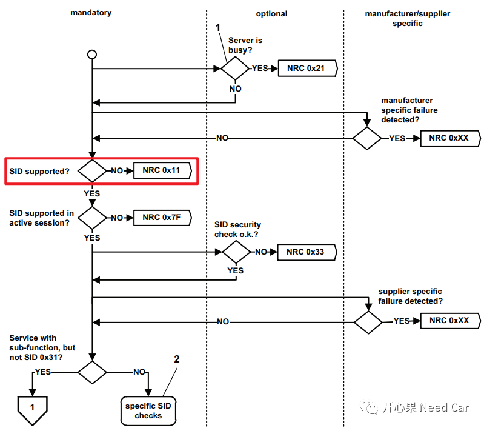
多说一点，NRC0x13的检查分两次，即最小长度和最大长度检查。类似的否定响应有NRC0x31等，测试NRC优先级时注意区分。以$23(ReadMemoryByAddress)服务为例，如下所示：
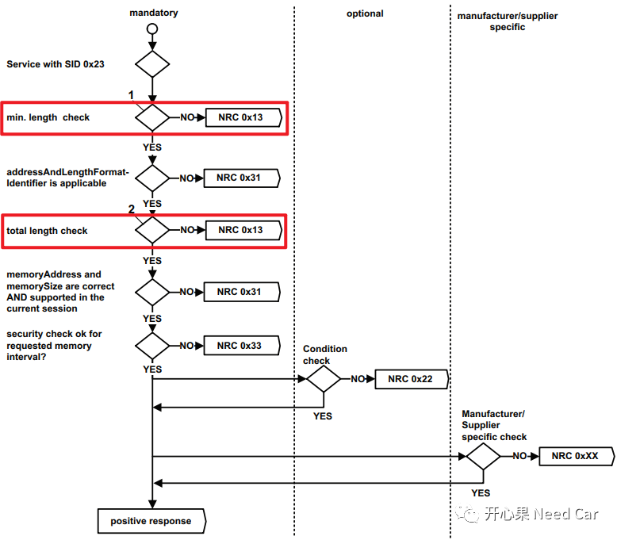
QA7：诊断服务响应抑制位置位，比如：$10 81，Server应该回复否定响应吗？
答：如问题，发送的诊断服务正响应抑制位被置位时，Server的否定响应，比如NRC0x11，应该响应吗？应该。工作中，我们经常口语化的表达“响应抑制位置位/响应抑制位未置位”，而忘了全程：正响应抑制位(Bit 7)置位/未置位。当发送一个有子服务的诊断服务请求时，正响应抑制位置位时，Server也应将否定响应信息回复给上位机。依据如下所示：
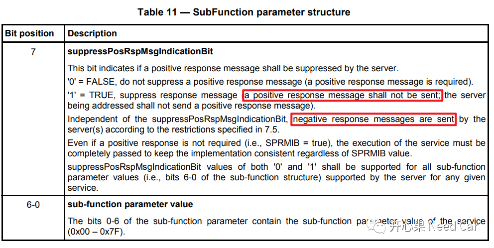
QA8：诊断服务请求中，功能寻址时，NRC0x11/NRC0x12/NRC0x7E/NRC0x31/NRC0x7F是否可以不回复？
答：可以。在UDS的规范中已经很明确的给出了答案，如下所示：
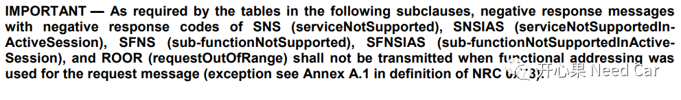
使用功能寻址，进行诊断服务请求时：
SNS（NRC0x11）、SNSIAS（NRC0x7F）、SFNS（NRC0x12）、SFNSIAS（NRC0x7E）、ROOR（NRC0x31）这些否定响应，Server可以不响应。
我们再说得细一点：
（1）功能寻址，正响应抑制位不置位（Bit7 = 0）：
服务不支持(NRC0x11）、子服务不支持(NRC0x12)、参数不对（NRC0x31），可以不响应；
（2）功能寻址，正响应抑制位置位（Bit7 = 1）：
服务不支持(NRC0x11）、子服务不支持(NRC0x12)、参数不对（NRC0x31），可以不响应；
如下所示：
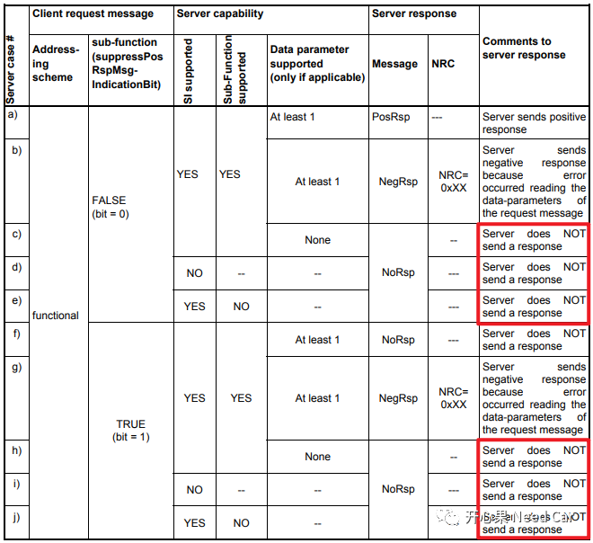
QA9：NRC0x78，你确定都懂了？
答：没有。
先看下图红框的描述，你知道在说啥吗？如果没有QA8做点铺垫，可能QA9这个问题就更有点迷糊了。
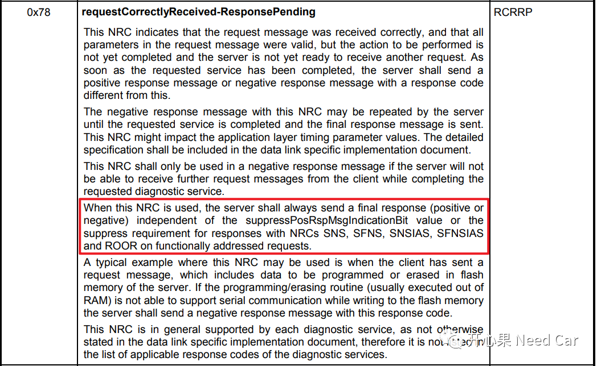
再细说，正响应抑制位被置位，比如：$10 81，如果Server先回复了NRC0x78，那么Server必须回复正响应，即$50 01 xx xx xx xx。
QA10：P2Server_max时间，在Bootloader和Application中，到底是多少？
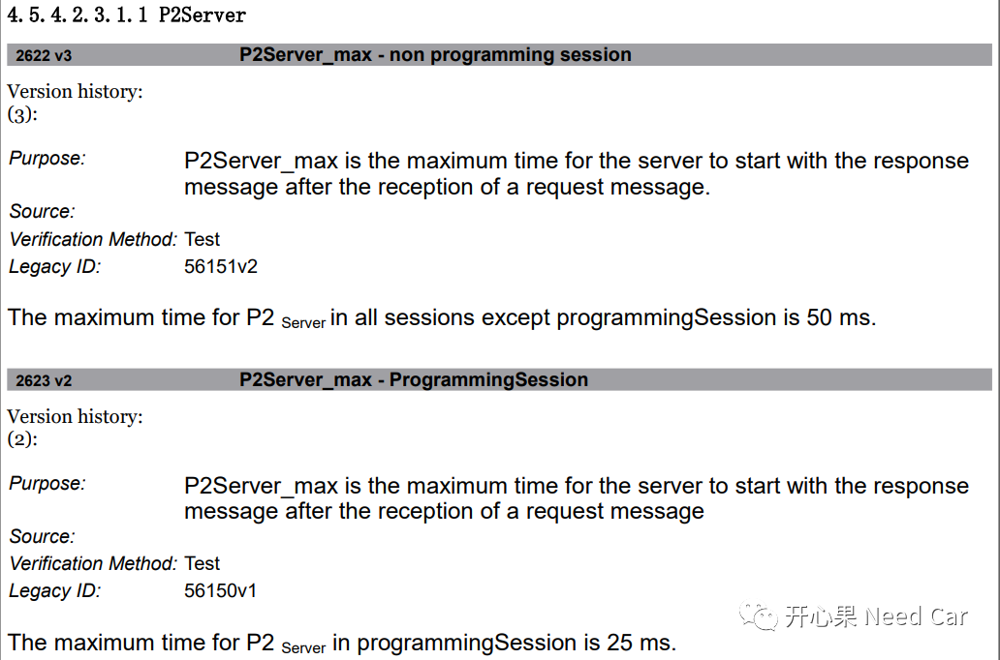
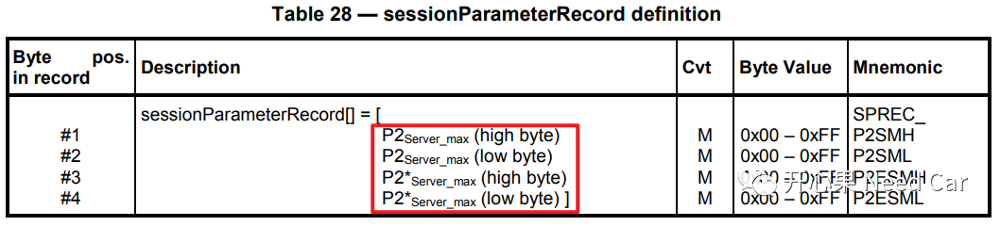
参考资料
Road vehicles — Unified diagnostic services (UDS) — Part 1: Specification and requirements.pdf
AUTOSAR_SWS_COMManager.pdf
往期精彩回顾